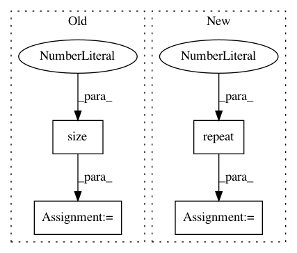

d5398270501cd5d6e9880db5e15ebf407ddec5ee,examples/plot_expectation_maximisation_manifolds.py,,weighted_gmm_pdf,#Any#Any#Any#Any#Any#,160
Before Change
def weighted_gmm_pdf(w, z, mu, sigma, distance):
// print(z.size())
// print(z.size(0), len(mu), z.size(1))
z_u = z.unsqueeze(1).expand(z.size(0), len(mu), z.size(1))
// print(z_u.size())
// print(mu.size())
mu_u = mu.unsqueeze(0).expand_as(z_u)
After Change
mesh_data_units = gs.expand_dims(mesh_data, 1)
mesh_data_units = gs.repeat(mesh_data_units, len(means), axis = 1)
//means_units = gs.expand_dims(means,0)
means_units = gs.expand_dims(means,0)
means_units = gs.repeat(means_units,mesh_data_units.shape[0],axis = 0)
mesh_data_units = torch.from_numpy(mesh_data_units)
means_units = torch.from_numpy(means_units)
In pattern: SUPERPATTERN
Frequency: 3
Non-data size: 4
Instances
Project Name: geomstats/geomstats
Commit Name: d5398270501cd5d6e9880db5e15ebf407ddec5ee
Time: 2020-04-03
Author: hadizaatiti@gmail.com
File Name: examples/plot_expectation_maximisation_manifolds.py
Class Name:
Method Name: weighted_gmm_pdf
Project Name: cornellius-gp/gpytorch
Commit Name: a7a12d157766b69cf4b1ddbb5fcdacfe485dc6fa
Time: 2019-04-03
Author: gpleiss@gmail.com
File Name: gpytorch/kernels/multitask_kernel.py
Class Name: MultitaskKernel
Method Name: forward
Project Name: jadore801120/attention-is-all-you-need-pytorch
Commit Name: 0b0eabbfd972c9e3f6323bff9d39ac5fc3ba9cc7
Time: 2018-08-23
Author: yhhuang@nlg.csie.ntu.edu.tw
File Name: transformer/Translator.py
Class Name: Translator
Method Name: translate_batch